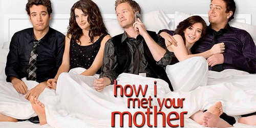

How I Met Your Mother
A série gira em torno da vida de Ted Mosby e dos seus amigos, que é narrada pelo próprio aos seus filhos, 25 anos mais tarde. Bob Saget, como Ted Mosby do futuro, conta então aos filhos as histórias e peripécias que o levaram a conhecer a mãe deles. As outras personagens principais são Marshall Eriksen, Robin Scherbatsky, Lily Aldrin e Barney Stinson.
Em 2005, aos 27 anos, o jovem Ted Mosby, após o seu melhor amigo, Marshall Eriksen, ficar noivo, decide finalmente ir em busca da sua cara-metade. Com gestos românticos questionáveis, Ted conhece Robin Scherbatsky, no bar que costumavam frequentar, Maclaren's Pub. Após uma série de eventos Robin passa a pertencer ao grupo de amigos de Ted: Barney, Marshall, e sua noiva, Lily, que namoram desde o primeiro ano da faculdade.
No dia 11 de Janeiro de 2010, a série alcançou os 100 episódios com o episódio Girls vs Suits.
Resumo da primeira temporada
Ted começa a namorar uma confeiteira, Victoria (Ashley Williams), com quem se reúne no casamento de um amigo, fazendo com que Robin fique com ciúmes e perceba que ela tem sentimentos por Ted. Victoria ganha uma bolsa de estudos em uma confeitaria e muda-se para a Alemanha, então ela e Ted tentam um relacionamento à distância. Quando Ted descobre sobre os sentimentos de Robin, ele diz que rompeu com Victoria. Eles quase tem relações sexuais quando Victoria telefona e Robin atende, confundindo o telefone de Ted pelo dela própria. Ted e Victoria se separam, e com raiva Robin se distância de Ted, mas, eventualmente, se reconciliam e resolvem namorar.
Elenco
- Josh Radnor como Ted Mosby
- Cobie Smulders como Robin Scherbatsky
- Neil Patrick Harris como Barney Stinson
- Alyson Hannigan como Lily Aldrin
- Jason Segel como Marshall Eriksen
- Cristin Milioti como A Mãe/A Garota do Guarda-Chuva Amarelo/Tracy McConnell